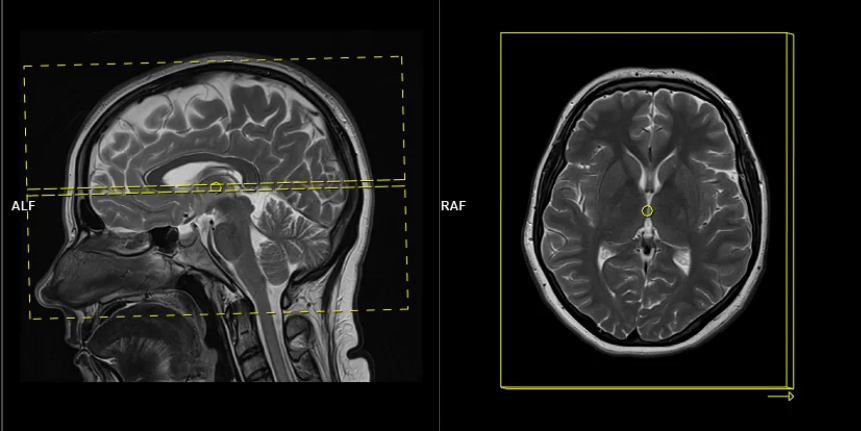

Magnetic resonance
It all starts with resonance. What does that even mean? Long ago, physicist Joseph Larmor discovered that the frequency \(f\) at which spins precess depends on the magnetic field strength \(B\): \[ f = \frac{\gamma}{2\pi} B\quad\text{(Larmor's equation).} \] The constant \(\gamma/2\pi\) is known as the gyromagnetic ratio. For hydrogen (protons), which MRI typically detects, \(\gamma/2\pi = 42.58\,\mathrm{MHz/T}\). In a typical MRI scanner with a field strength of \(3\mathrm{T}\), the Larmor (precession) frequency for hydrogen protons is about \(127.74\ \mathrm{MHz}\), which lies in the FM radio band!
If we apply a radio-frequency (RF) pulse at that frequency — the RF field commonly denoted \(B_1\) in MRI — it will tip the spins away from alignment with the main magnetic field, \(B_0\) (the z-direction). This is analogous to pushing a child on a swing: if the pushes are applied at the correct intervals, the swing’s amplitude increases. Oh! So that is resonance!

Because visualizing spins and RF fields oscillating at the Larmor frequency all the time is tedious, we work in the “rotating frame.” Imagine rotating at the same rate as the spins precess so that the fast Larmor rotation disappears in this moving frame. The RF field then appears as a slowly varying complex envelope (amplitude and phase) that actually controls the spins. This simplifies the picture: we need only think about the RF envelope, not the high‑frequency carrier. We will use this rotating frame from now on.
Slice selection
To get a 2D picture from a 3D object we first pick a thin slice (like cutting a cheese slice). MRI can do this because the scanner can add a magnetic-field gradient \(G_z\) along the \(z\) axis. That gradient makes the Larmor frequency vary with position: spins at different \(z\) positions precess at different frequencies. In other words, frequency becomes a spatial label.
If we transmit an RF pulse whose spectrum covers only a small band of frequencies, only spins whose Larmor frequency lies in that band will be tipped — so only that z-range (the slice) is excited. Using the Fourier-transform, a narrow, rectangular passband in frequency corresponds to a long sinc pulse in time. So, to excite a slice you play a sinc‑shaped RF envelope while the \(G_z\) gradient is on. The width of the slice is set by the gradient strength and the bandwidth of the RF pulse.
Because the gradient is on while the RF is applied, spins at different z positions accumulate different phases. To undo that extra phase (so the excited spins are coherent within the slice) we apply a small “refocusing” or rephasing gradient lobe after the RF. That final lobe re-centers the phase across the slice and leaves us with a clean, selectively excited 2D slab ready for further manipulation or imaging.

If you’ve ever had an MRI scan, you’ve experienced slice selection. This standard and widely used technique lets MRI acquire 2D slices.

2D excitation
So far we used a gradient along z to select a thin slice in the z-direction (1D pattern). Can we excite an arbitrary 2D pattern? Yes.
By playing time‑varying gradients in two orthogonal directions (x and y) while transmitting a shaped RF waveform, the RF tips spins at specific x–y locations. A simple picture: the gradients change which position is “in tune” with the RF, and the RF turns spins on at those positions — like steering a paintbrush while painting.
Under the common “small‑tip‑angle” approximation, the excited transverse magnetization pattern is (approximately) the 2D Fourier transform of the RF waveform sampled along the path the gradients trace through “excitation k‑space.” Excitation k‑space is the 2D Fourier domain: each k‑space coordinate corresponds to a spatial frequency. By choosing the k‑space trajectory (for example, spiral) and designing the RF accordingly, you can synthesize many useful 2D patterns; the trajectory’s extent and sampling density set the achievable field‑of‑view and resolution.

A “pencil‑beam” excitation creates a narrow, cylindrical region of magnetization. By positioning this small beam over the liver you get a continuous signal that changes as the patient breathes: the liver moves with respiration, and that motion modifies the measured signal. This motion signal is used as a respiratory trace to accept data only during a chosen breathing phase (for example, end‑expiration) and to reject data acquired at other times, reducing motion artifacts in cardiac MRI.

Designing arbitrary 2D excitation pulses
Now that we know 2D excitation is possible and have an intuition for how it works, how do we design an RF pulse that produces a specific 2D pattern?
We pose this as an inverse problem — that is, we look for the input (the RF pulse) that produces a desired output (the magnetization pattern). Or the cause of a given effect. The forward model \(\mathbf{A}(\mathbf{x})\) predicts the transverse magnetization produced when we play an RF waveform \(\mathbf{x}\) (and the chosen gradient waveforms). If our desired magnetization pattern is \(\mathbf{b}\), we can formulate the design as a least‑squares optimization problem:
\[ \min_{\mathbf{x}} \Vert \mathbf{A}(\mathbf{x}) - \mathbf{b} \Vert_2^2. \]
Here the forward model \(\mathrm{\mathbf{A}}(\mathbf{x})\) is implemented by a physics simulation: we numerically solve the Bloch equations for a given RF waveform and gradient trajectory to predict the resulting transverse magnetization. Rather than reimplementing those equations, we use the Julia package KomaMRI.jl to run the simulation and obtain \(\mathrm{\mathbf{A}}(\mathbf{x})\).
using KomaMRICore
# A(x) - our forward model
function forward(x, params)
seq_aux = copy(params.seq)
seq_aux.RF[1].A .= x # Update RF pulse
mag = simulate(params.obj, seq_aux, params.sys; params.sim_params)
return mag
end
# ||A(x) - b||2^2 - our loss function
function loss(x, params)
mag = forward(x, params)
return sum(abs2, mag.xy .- params.target_profile) / length(mag.xy)
endThen, to optimize this loss function we need to calculate a gradient using FiniteDiff.jl or Enzyme.jl. For example, using FiniteDiff.jl it would look like this:
calc_grad!(∇loss, x, params) = FiniteDiff.finite_difference_gradient!(∇loss, x -> loss(x, params), x)Finally, we can use a method like Malitsky-Mishchenko adaptive gradient descent to solve our inverse problem.


The previous optimization (Fig. 6) took around 5 hours, as it run on the CPU using FiniteDiff.jl. We did the same using GPU kernels using KernelAbstractions.jl and Enzyme.jl using reverse-mode AD and we were able to optimize this in under 5 seconds.
And now the star of the show, the Julia logo, in all its spins’ glory:

These optimized pulses (and others) were validated on a real MRI scanner, and the acquired images closely matched the simulations from KomaMRI.jl.

Conclusions
Using Julia and GPU‑accelerated simulations, radio‑frequency (RF) pulses were designed in under five seconds. This made it possible to “draw” the Julia logo in a water‑bottle phantom using a real MRI scanner. More than a cool technical demostration, sub‑minute design times make patient‑specific pulse tailoring practical: pulses could be optimized for a person’s anatomy or implants to improve image quality and reduce artifacts.
This work was submitted as an abstract to the upcoming International Society for Magnetic Resonance in Medicine (ISMRM) conference.
Acknowledgemnts
This work would not have been possible without many Julia packages: CUDA.jl, KernelAbstractions.jl, Enzyme.jl, FiniteDiff.jl, Makie.jl, KomaMRI.jl, and others. Thanks to the Julia community for being awesome 😊. Special thanks to Kareem Fareed, who implemented the Enzyme-based version of this work, to John Pauly for insightful discussions, and to Daniel Ennis for his supervision and continuous support.